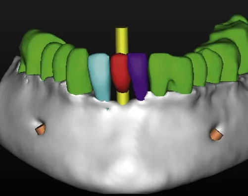
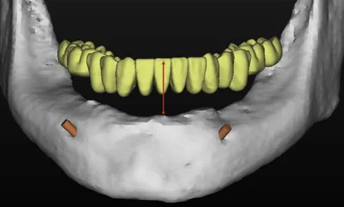

نسخه استخراجشده؛ ترجمه یا تأیید علمی انجام نشده است. وضعیت: captured
سه عدد، چارچوب فضایی کاشت را میسازند:
۱٫۵ میلیمتر از دندان مجاور، ۳ میلیمتر از ایمپلنت مجاور. این دو عدد قاعدهی عمومی فاصلهگذاریاند.
و عدد سوم دربارهی عرض است: ایمپلنت روتفرم با قطر کرستال ۴ میلیمتر، معمولاً به حداقل ۷ میلیمتر عرض استخوان نیاز دارد. محاسبهاش شفاف است: ۴ میلیمتر ایمپلنت + ۲ میلیمتر باکال + ۱ میلیمتر لینگوال. و دلیل این حاشیهها فقط ثبات مکانیکی نیست — خونرسانی اطراف ایمپلنت هم به همین ضخامت استخوان وابسته است.
همین منطق در بُعد مزیودیستال هم تکرار میشود: ایمپلنت با قطر ۵ میلیمتر باید دستکم ۸ میلیمتر استخوان مزیودیستال داشته باشد.
و یک یافتهی پیامددار: ریجهایی که عرضشان بیش از ۶ میلیمتر بوده، تحلیل کرستال کمتری نشان دادهاند نسبت به مواردی که با حداقل ابعاد کار شده. یعنی حاشیهی استخوانی بیشتر، فقط راحتی جراح نیست — نتیجهی بلندمدت را عوض میکند.

فضای ارتفاع تاجی (CHS) از صفحهی اکلوزال تا سطح استخوان اندازهگیری میشود. و اهمیتش از یک اصل مکانیکی میآید: CHS همان بازوی اهرم است. هرچه بلندتر، گشتاور وارد بر ایمپلنت و استخوان کرستال بیشتر.
عدد کلیدی: ۱۵ میلیمتر. در Division B، حفظ CHS در ۱۵ میلیمتر یا کمتر ضروری است تا گشتاور بارهای جانبی مهار شود — بهویژه چون عرض ریج از قبل کم است. و وقتی CHS از ۲۰ میلیمتر بگذرد، به یک تشدیدکنندهی نیروی چشمگیر تبدیل میشود که بهندرت میتوان آن را به اندازهی کافی کاهش داد.
و اینجاست که طبقهبندی Division با آنالیز فضا گره میخورد: اگر ارتفاع ریج طوری کاهش یابد که CHS از ۱۵ میلیمتر بگذرد، دستهی استخوانی ممکن است عوض شود. یعنی استئوپلاستی بیهزینه نیست: عرض به دست میآید، ولی CHS بیشتر میشود.
پیامدهای دیگر CHS بلند: تعداد بیشتری ایمپلنت لازم میشود، و حجم بیشتری از مواد پروتزی که خودش خطر عوارض پروتزی را بالا میبرد. در سمت مقابل، CHS کمتر از ۸ میلیمتر هم مشکلساز است، چون فضای لازم برای قطعات پروتزی را نمیدهد.
و یک هشدار دربارهی ترتیب راهحلها: اگرچه پروتز رایجترین راه برای مدیریت CHS اضافی است، باید آخرین گزینه باشد، نه اولین.

نوع سؤال: ساخت کلمه · 7 خانه
حروف منبع: ل · ا · ل · ن · گ · ی · و
نوع سؤال: ساخت کلمه · 5 خانه
حروف منبع: ن · ب · ج · ی · ا